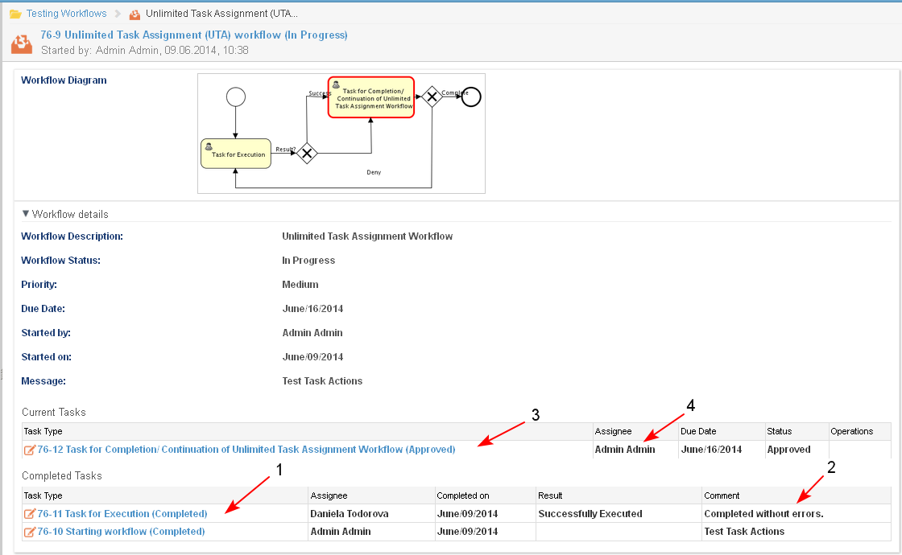

A task cannot be completed by the assignee if before that a result from the completion of the task is not selected.
- The assignee of an active task opens it, enters a Comment (1), chooses an assignee of the next task and selects one of the possible results for the completion (2). Depending on the workflow, after selection of a result, the next task may be assigned automatically to a predefined user.

- The system opens the Case Dashboard. Depending on the stage of the workflow, a new task is generated to the selected assignee or the workflow is completed.

- When a task is completed and the user opens the workflow details page:
- The status of the task is changed to "Completed" (1).
- The entered comment is visible (2).
- The individual rights of the assignee of "Collaborator" on the case, change to "Consumer". When this user is a member of a group with "Collaborator" permissions for the corresponding type of case, these permissions remain.
- The automatically generated task (3) is send to the user (4) as specified for that step in the workflow (here - the originator of the workflow).
- The status of the task is changed to "Completed" (1).
